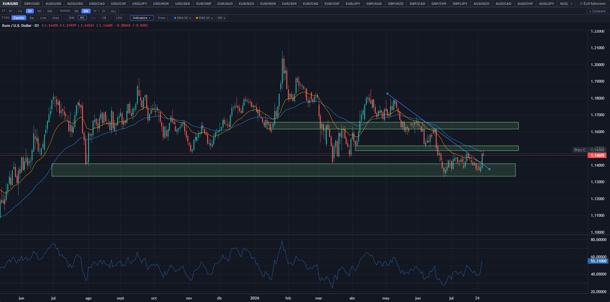
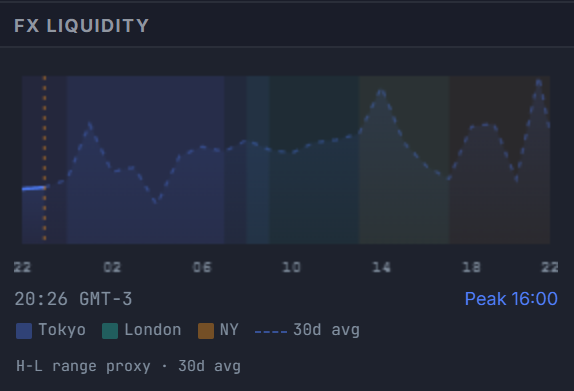

How to Use the FX Terminal
A complete walkthrough of every section in the dashboard — what each widget shows, where the data comes from, and how to use it to monitor FX market conditions.
Watch the full walkthroughTerminal Layout
The terminal uses a three-column layout at full width — a left sidebar, a wide main content area, and a right panel. By default it loads in split layout mode: the main area is divided into a left column (chart, FX table, heatmap) and a right column (risk, rates, COT, sessions). Understanding the structure helps you navigate quickly:

Split Layout
The main content area is split into two scrollable columns by default — the chart, FX table, and heatmap on the left; cross-asset, risk, rates, COT, sessions, and signals on the right. This is the recommended view on desktop as it keeps the chart visible while scrolling through data panels on the right. The split ratio is adjustable: drag the vertical divider bar between the two columns left or right to resize. Your preferred split width is saved automatically.
To toggle split mode on or off, click the split icon button ⊟ in the top-right corner of the Price Chart panel header — next to the panel subtitle. When split layout is active, the button is highlighted in blue. Clicking it again collapses back to a single full-width scroll. Split layout is disabled automatically on mobile viewports.
On mobile, the layout collapses into a single scrollable column regardless of the split setting. The sidebar and right panel fold into the main flow.
The sticky topbar navigation links jump you directly to major sections: FX Pairs, Macro, Rates, Cross-Asset, Risk, Positioning, Calendar, Derivatives, and News.
Topbar & Quote Bar
Session indicator
The top-right of the topbar shows the current active trading session (Sydney, Tokyo, London, New York, or an overlap) based on your browser's local time converted to UTC. A blinking green dot indicates the clock is live.
Quote bar
The horizontal strip below the topbar shows live prices for EUR/USD, USD/JPY, GBP/USD, AUD/USD, USD/CAD, USD/CHF, NZD/USD, EUR/GBP, GOLD FUT, WTI FUT, BTC/USD, US 10Y Yield, and DXY. FX pair prices update in real time during market hours via WebSocket (tick-by-tick). Non-FX instruments (Gold, WTI, BTC, US 10Y, DXY) update every ~5 min; on days when the primary feed appears frozen (e.g. a bank holiday), the terminal automatically switches to a backup feed for commodities and equity indices. Official daily reference rates serve as a silent fallback when all primary sources are unavailable.
Delayed ~5min · HH:MM to Live. Non-FX instruments (Gold, WTI, BTC, US 10Y, DXY) update every ~5 min; when the primary feed is detected as frozen, the terminal switches automatically to a backup feed for commodities and equity indices. Click any pair to jump directly to the price chart with that symbol pre-selected.
Click any pair in the quote bar to jump to the Price Chart with that symbol pre-selected.
News ticker
The scrolling headline strip below the quote bar shows the most recent FX-relevant headlines from RSS feeds (FXStreet, ForexLive, Reuters FX, ECB, BoE, BoJ, RBA, RBNZ, BoC, SNB, Norges Bank, Riksbank, Federal Reserve, Investing.com, ForexCrunch, MarketPulse, DailyForex, ActionForex, BabyPips, FX Empire and others), refreshed every hour. The terminal re-checks for new data every 2 minutes. Headlines are color-tagged by currency when a specific pair is mentioned.
AI Narrative & Regime
Immediately below the quote bar in the main panel, the Narrative bar provides a 2–3 sentence summary of current market conditions, synthesized by the AI engine from rate differentials, cross-asset flows, COT positioning, and upcoming macro events.
Next to the narrative text, the Regime label provides a one-word characterization of the overall market environment:
Price Chart
A native price chart — the primary chart for all symbols with OHLC data (all major FX majors and crosses, Gold FUT, WTI FUT, DXY, BTC/USD, and others). 22 instruments are accessible via the tab row above the chart. For symbols without OHLC data, the chart falls back to an embedded TradingView widget.
The LW chart loads in candlestick mode with a D1 (daily) timeframe and a 3-month default range. The toolbar above the chart gives you full control: timeframe (H1 / H4 / D1 / W1 / MN), chart type (Candle / Bar / Line / Area), range (3M / 6M / 1Y / 3Y / ALL), overlay toggles (WM — symbol watermark; PC — previous close line; VOL — volume histogram; CB — central bank meeting markers), logarithmic scale, and a multi-MA selector (periods: 5, 10, 20, 50, 100, 200 — up to three simultaneous MAs). The OHLC header updates on hover showing O/H/L/C values and the daily change. For H1/H4, bars are sourced from intraday candles; D1 bars come from daily OHLC history. W1 and MN bars are aggregated from the daily dataset — the current incomplete bar's open, high, and low reflect the full period to date (not just the current session).

FX Pairs Table
Below the price chart, the FX Pairs — Majors table shows a snapshot of all major pairs with the following columns:
- Pair Currency pair identifier (e.g., EUR/USD)
- Bid / Ask Current bid and ask prices — FX pairs sourced live during market hours; non-FX instruments delayed ~5 min
- Spread Estimated current spread in pips, color-coded (green <1.5 pip, orange 1.5–3, red >3)
- 1D Percentage change vs. yesterday's closing price
- 1W Percentage change vs. last week's close
- HV 30d 30-day historical (realized) volatility — annualized standard deviation of daily log returns, computed from daily OHLC data. Not implied volatility.
- Sess H Intraday session high price.
- Sess L Intraday session low price.
Currency Strength Heatmap
A ranked row of 10 cells — one per G10 currency (USD, EUR, GBP, JPY, AUD, CAD, CHF, NZD, NOK, SEK) — sorted from strongest to weakest. Each cell shows the currency's average percentage change across the pairs that include it, computed from 32 live pairs in total: the 28 classic G8 crosses (each of the 8 majors appears in 7 pairs) plus 4 Scandinavian pairs (USD/NOK, USD/SEK, EUR/NOK, EUR/SEK). NOK and SEK are therefore each averaged across only 2 pairs rather than 7 — a thinner, noisier read than the eight majors, reflecting NOK/SEK's narrower direct cross-pair coverage rather than a data quality issue.
Strength is computed across 32 live pairs: the classic 28-pair combination of the 8 G8 majors (8×7÷2 = 28, each currency appearing in exactly 7 pairs) plus 4 added Scandinavian pairs (USD/NOK, USD/SEK, EUR/NOK, EUR/SEK) to bring NOK and SEK into the same heatmap. When market is open, each currency's score updates in real time; during off-hours delayed data (~5 min) provides the baseline. For example, JPY's score averages its move in USD/JPY, EUR/JPY, GBP/JPY, AUD/JPY, NZD/JPY, CAD/JPY and CHF/JPY — a true 7-pair basket reading. NOK and SEK, having no direct cross-pairs against GBP, AUD, CAD, CHF, or NZD, average only their 2 available pairs each (vs. USD and vs. EUR) — a valid but thinner read than the 8 majors. ECB daily rates serve as a silent fallback only when RT data is unavailable. Cells are color-coded by intensity: dark green (strong), light green (mild), flat (near zero), light red (mild weakness), dark red (weak).
Currency Detail Modal
Clicking any cell in the heatmap opens a full-screen detail modal for that currency. The modal organizes data into four tabs:
Pair Breakdown — shows the direct pairs for the selected currency (7 for the 8 G8 majors; 2 for NOK and SEK) with close price, previous close, percentage change, day % and 1W %, and a proportional impact bar. A composite ranking row shows the full 10-currency strength order with animated horizontal bars. The metrics strip above the table shows six tiles: Composite (intraday), 1W Strength, Rank, Pairs won, Strongest vs, and Weakest vs.
Session — shows the selected currency's strength contribution weighted by trading session volume (New York 38%, London 35%, Tokyo 18%, Sydney 9%). The active session is highlighted in blue. Below the session bars, an AI Session Context block provides per-session notes for the currency: a concise recap of the catalyst that drove price action in each session (CLOSED), current session dynamics (ACTIVE), and the upcoming scheduled event to watch (UPCOMING). Session context notes are generated 4× daily alongside the main narrative and are grounded in actual economic calendar events. All displayed times are converted to your local timezone.
Correlations — shows a 10×10 strength differential matrix with a Composite column: each cell is the composite % difference between the row currency and the column currency, with color intensity proportional to the divergence. Below the matrix, a Strength Drivers block lists the top 3 pairs by absolute contribution, each with an AI-generated one-line note (max 85 characters) explaining the structural driver — CB stance differential, COT positioning extreme, or carry differential. Attribution footer: AI Analytics · ~5min delay. Clicking any row in the Key Correlations panel (right panel) opens a dedicated correlation modal with a 252-day history sparkline showing real calendar dates, z-score, and a regime signal.
CSI — Currency Strength Index: a multi-series LightweightCharts chart showing the cumulative log-return of all 10 G10 currencies over selectable periods (1M / 3M / 6M / 1Y / All). Computed from the full OHLC dataset across all 32 pairs — the same data as the heatmap. The focal currency's line is highlighted; all series start at 0% at the beginning of the selected period. A crosshair tooltip shows all 10 values simultaneously ordered strongest to weakest. A legend table below shows cumulative return, min, max, and range for each currency over the period.
Left Sidebar
FX Liquidity
A canvas-drawn chart showing estimated FX market liquidity across the 24-hour trading day. The curve peaks at London–New York overlap (~13:00–17:00 UTC), which historically accounts for the highest volume and tightest spreads. A vertical orange line marks the current UTC time — everything to its left is scaled to today's actual volatility; everything to its right is a historical projection. A small source label below the legend shows the active data source (Delayed ~5min · H-L range proxy · 30d avg when live data is available, Historical avg · fixed reference as fallback). See the dedicated FX Liquidity & Sessions guide for a full explanation.

Crosses
Live prices and daily percentage changes for 21 cross pairs, ordered by standard ISO currency hierarchy. EUR group: EUR/GBP, EUR/JPY, EUR/CHF, EUR/CAD, EUR/AUD, EUR/NZD. GBP group: GBP/JPY, GBP/CHF, GBP/CAD, GBP/AUD, GBP/NZD. AUD group: AUD/JPY, AUD/NZD, AUD/CHF, AUD/CAD. NZD group: NZD/JPY, NZD/CAD, NZD/CHF. CAD group: CAD/JPY, CAD/CHF. CHF group: CHF/JPY. Click any cross to open it in the price chart and expand its inline detail strip — the same data card available in the FX Pairs table (Price · Volatility · COT Positioning · Retail Sentiment). Click the same row again to collapse it. Cross pairs often reveal currency-specific stories that major pairs obscure.
Carry Trade — Top Pairs
A ranked list of the top 10 carry trade pair candidates across all 45 G10 currency combinations, sorted by real carry — the nominal OIS rate differential minus the inflation expectations differential between the two legs. This equals the real rate of the long leg minus the real rate of the short leg, and is the primary metric used by institutional FX carry screens. The tiebreak is carry-to-vol: real carry divided by 30-day realised volatility (HV30), filtering for efficiency of return per unit of risk. When inflation expectations data is unavailable, the panel falls back to gross nominal differential ranking and the subtitle updates to reflect this.
Each row shows: the rank, the pair, the nominal OIS spread as context (e.g. +2.83%), a proportional bar, and the real carry value on the right (what actually ranks the pair). A positive real carry means the long leg earns positive carry after inflation erodes the nominal spread. Clicking any row opens the Real Rate Carry Modal for a full breakdown. Hovering shows: long rate / short rate / real carry / HV30.
The right column shows real carry (nominal OIS spread minus inflation differential) — the primary ranking value. The middle column shows the nominal OIS spread as reference context. Color coding: green = real carry ≥+0.5% (positive after inflation), neutral = 0%–0.5%, dim = negative real carry (inflation erodes nominal spread). Note: this is inflation-adjusted carry, not Covered Interest Parity (CIP) — no FX forward adjustment is applied.
Upcoming Events
A native Economic Calendar panel embedded in the left sidebar, showing G10 medium- and high-impact events. The primary source is ForexFactory (fetched server-side every ~6 hours), with automatic fallback to alternative calendar feeds. Columns: local time (your browser timezone), currency flag, impact dot (red = high, orange = medium), event name, actual result with beat/miss coloring, consensus forecast, and previous reading. The source label reflects the active feed (e.g. ForexFactory · actual vs consensus · 90d rolling). The panel auto-scrolls to today or the next upcoming event on load. A floating pill button appears when upcoming events are off-screen, with an adaptive arrow pointing toward them.
On bank holidays, one or more dedicated holiday rows appear at the top of the affected day — one row per market closure. Each row shows the currency flag, 3-letter code (e.g. 🇺🇸 USD), the holiday title (e.g. "Memorial Day"), and "All Day" in the time column. A tooltip on hover shows the full label: "Memorial Day — USD market closed". This makes it immediately visible why quotes for Gold, SPX, WTI, and USD pairs may be frozen on those days.
Economic Surprises
A CESI-style (Citi Economic Surprise Index) centred bar chart showing whether each major currency’s macro data is beating or missing consensus forecasts over a rolling 90-day window. The panel scores medium- and high-impact ForexFactory releases only — low-impact events and non-macro noise (auctions, inventory data, financial flows) are excluded to match the methodology of institutional surprise indices.
The bar is centred at zero: a green bar extending right means data is beating consensus on net; a red bar extending left means data is missing. The N column shows how many events with actuals are in the current window — entries with fewer than 15 events are dimmed to flag low statistical confidence.
| CCY | Index | N |
|---|---|---|
| USD | 31 | |
| EUR | 29 | |
| GBP | 28 | |
| JPY | 24 | |
| AUD | 18 | |
| CAD | 17 | |
| CHF | 9 | |
| NZD | 12 |
How to read the index: an event where actual exceeds consensus counts as a beat (+1), below consensus as a miss (−1), equal as in-line (0). Index = (beats − misses) / total scored × 100, ranging from −100 (all misses) to +100 (all beats). This is the same beat/miss approach used as the basis of institutional economic surprise indices (Citi CESI and equivalents) before they apply their proprietary weighting. As 12–24 months of history accumulate, the panel upgrades each event to a z-score (actual − forecast relative to historical standard deviation), providing a magnitude-weighted signal that matches the full institutional index methodology.
Hover any row for a detailed breakdown: beat count, miss count, in-line count, beat rate, and current index value.
Attribution: ForexFactory · actual vs consensus · 90d rolling
Pair Detail
When you click any pair in the FX Pairs table or any cross in the sidebar, an inline detail strip expands directly below the selected row. It updates instantly on every click with no page reload — click the same row again to collapse it. Data is organized into four labeled sections — Price · Volatility · COT Positioning · Retail Sentiment — matching the grouping convention of institutional FX terminals:
Fields are grouped into four sections:
- Price block Live price, daily % change, session H/L, spread and ADR in pips.
- Price section 1W Chg · Carry differential · ADR · Base currency policy rate.
- Volatility HV 30d · ATM IV · IV−HV · 25d Risk Reversal · Bid-Ask Spread. ATM IV color: green ≤7% (cheap), red >12% (expensive). 25d RR from Saxo Bank (1M tenor, indicative mid) — positive = calls bid over puts (upside skew on base currency); negative = puts bid (downside protection dominant).
- COT Positioning LF Net · LF WoW Δ · AM Net · Net % OI · LF Open Interest — all from CFTC Disaggregated TFF report. For USD majors, one currency block (base vs USD). For cross pairs (EUR/GBP, GBP/JPY, etc.), two independent blocks are shown — one per component currency — each labeled by currency code. The summary line at the bottom shows LF/AM alignment: LF Short · AM Long · diverging.
- Retail Sentiment Long/short ratio from Myfxbook community — retail traders only. Contrarian indicator: extreme retail long bias typically precedes institutional short positioning.
- Carry Numerator currency rate minus denominator currency rate. Positive = holding long earns the differential. For USD/JPY: Fed Funds − BoJ rate. For EUR/USD the carry is currently negative (ECB rate below Fed rate, so holding long EUR/USD costs the differential).
Right Panel
Central Bank Rates
Current policy rates for all eight major central banks (Fed, ECB, BoE, BoJ, RBA, BoC, SNB, RBNZ), updated daily from official CB sources. The trend column shows the direction of the most recent rate cycle: ↑ Hiking, ↓ Cutting, or — Hold. The trend resets to neutral (—) after approximately 90 days without a policy move — regardless of the prior cycle direction.
Key Correlations
Rolling Pearson correlations between 12 FX-relevant pairs and reference assets, computed from daily OHLC data. Three lookback windows are available — 30d, 60d, and 90d — selectable via the buttons in the panel header (60d is the default). The table includes a vs norm column showing how far the current 30d correlation deviates from its 252-day historical baseline, expressed as a z-score. The baseline is the mean of all rolling 30-day Pearson windows over the past 252 trading days — keeping the norm horizon consistent with the current correlation regardless of which display window (30d/60d/90d) is selected. Pairs deviating more than 1.5σ from their historical norm are flagged as stretched; above 2.5σ as a break — a broken correlation is often as informative as the correlation itself. Clicking any row opens a detail modal with a 252-day sparkline on real calendar dates, z-score, 30d/60d/90d snapshots, and a regime signal indicator.
Two pairs monitor macro regime specifically: DXY vs SPX (normally negative — a positive reading signals USD funding stress) and Gold vs DXY (normally negative — a positive reading signals the safe-haven model is broken or inflation is driving both).
CB Rate Expectations
Forward-looking rate expectations for all eight major central banks at their next scheduled meeting, sourced from OIS (Overnight Index Swap) and futures market pricing — not analyst forecasts, not editorial opinion. This panel is distinct from the CB Rates table above it: the CB Rates table shows what the rate is today; this panel shows what the market expects the rate to become at the next meeting. FX reacts to expectations, not to the current rate — which is why this signal matters at the margin.
Each Bias field is computed from the overnight rate market specific to that currency:
| Currency | OIS Instrument | Source |
|---|---|---|
| USD | SOFR futures (ZQ) | CME FedWatch |
| EUR | ESTER overnight (+7bp DFR normalisation) | ECB Statistical Data Warehouse |
| GBP | SONIA overnight | Bank of England public database |
| JPY | TONA overnight | Bank of Japan daily CSV |
| AUD | 30-day IB cash rate futures | ASX Rate Indicator |
| CAD | CORRA overnight | Bank of Canada Valet API |
| CHF | SARON overnight | SNB data portal |
| NZD | OCR interbank overnight (HB2) | RBNZ daily CSV |
Classification: if the OIS/overnight rate is more than 10bp below the current policy rate → ↓ Cut; more than 10bp above → ↑ Hike; within ±10bp → → Hold. The label is prefixed with ~ when the OIS source is unavailable and the terminal falls back to estimating from historical rate trajectory. When market-implied probabilities are available for any of the eight banks, a small chip appears next to the Bias showing the probability of the expected move: 24%↓ for cut bias or 45%↑ for hike bias. Cut chips are color-coded red (≥60%), neutral (40–59%), or muted (<40%); hike chips follow the same thresholds in green.
25-Delta Risk Reversal & Implied Vol
The standalone Positioning Bias table (ATM IV + COT bias + 25d RR in a single row per pair) shown in earlier terminal versions has been retired. Its components now live in two places: COT-derived directional bias is covered in the dedicated COT / CFTC Positioning guide, and options-market data — 25-delta Risk Reversal term structure, realized volatility, and CIP-implied forwards — has moved to the dedicated Derivatives tab, covered in full under Derivatives Suite below.
News Feed
The News tab in the topbar (keyboard shortcut: N) opens the dedicated News Feed panel, replacing the main content area — the same pattern as the Derivatives section. It shows FX-relevant headlines from FXStreet, ForexLive, Reuters FX, ECB, BoE, BoJ, RBA, RBNZ, BoC, SNB, Norges Bank, Riksbank, Federal Reserve, NewsData.io, Marc to Market and others, sorted by estimated market impact. The feed refreshes hourly; the terminal re-checks for new data every 2 minutes using HTTP ETags — no bandwidth cost when there are no changes.
Each row shows: the publication time with a relative age indicator below it, an impact dot (red = high, amber = medium, grey = low), the headline truncated to one line, and the currency tag for the pair most likely affected. Hovering over any row shows the complete headline in a native tooltip. Click a row to expand an accordion drawer with the full snippet, source name, and a link to the original article — only one item can be expanded at a time.
The filter bar at the top lets you narrow the feed by currency (All / USD / EUR / GBP / JPY / AUD / CAD / CHF / NZD) or by impact (All / High / Med). Filters apply instantly in memory without re-fetching.
Alerts & Market Signals
The final section of the main panel shows AI-generated market signals, updated 4× daily alongside the narrative (00:00, 06:30, 14:30, 20:00 UTC). Each signal includes:
- Priority dot — a colored indicator: red = critical, amber = warning, blue = informational
- Timestamp — time of the last update cycle, converted to your local timezone
- Title — a short label identifying the pair or theme
- Text — the rationale: cross-referencing logic across rate differentials, COT positioning, and price action
- Evidence chips — click any signal row to expand the data points that triggered it (e.g. "VIX: 24.1", "EUR/USD: 1.1505")
Signal Notifications
A bell icon button in the panel header lets you opt into browser notifications for new AI signals. When enabled, the button turns blue and the browser will notify you each time the signal set updates with new content — one notification per update cycle, summarising the count by priority. The preference is saved in your browser's local storage. To disable, click the bell again. If your browser has blocked notifications for this site, the button shows a red "blocked" state — re-enable notifications in your browser's site settings to use this feature.
Price & Advanced Alerts
Configurable alerts are available via the alerts button in the status bar at the bottom of the screen. An alert type selector lets you choose from six categories:
| Type | What it monitors | Instruments |
|---|---|---|
| Price / Level | Fires when a price or index crosses a threshold (above or below) | VIX, EUR/USD, USD/JPY, GBP/USD, AUD/USD, USD/CHF, NZD/USD, Gold, WTI, DXY, SPX, BTC, US 10Y, MOVE |
| HV30 vs IV spread | Fires when the gap between realised (HV30) and implied (IV) volatility crosses a threshold — useful for identifying options mispricing | EUR/USD, GBP/USD, USD/JPY, AUD/USD |
| IV Rank | Fires when the current implied volatility percentile rank crosses a threshold (0–100 scale) — helps identify historically cheap or expensive options | EUR/USD, GBP/USD, USD/JPY, AUD/USD |
| Correlation Z-score | Fires when a correlation deviates from its 252-day norm beyond a z-score threshold — signals potential regime breaks | All 12 correlation pairs (EUR/USD vs DXY, AUD/USD vs Gold, etc.) |
| VaR 95% (1d) | Fires when the 1-day historical VaR at 95% confidence for an instrument exceeds a threshold — signals elevated tail risk | EUR/USD, USD/JPY, GBP/USD, AUD/USD, Gold, WTI, SPX, BTC |
| Regime change | Fires when the live stress score triggers a transition to a specific regime label | RISK-OFF, CAUTION, MIXED, RISK-ON |
All alerts check every 5 minutes, fire a browser notification on trigger, and persist across sessions in local storage. Click the alert row in the popover to delete it. If your browser has blocked notifications, the alerts button shows a red state — re-enable from your browser's site settings.
Derivatives
The Derivatives section is accessible via the topbar navigation tab (keyboard shortcut: D). It is hidden by default and replaces the main content area when selected. It consolidates five derivative and reference data panels not found elsewhere in the terminal.
Implied Forwards — Covered Interest Parity (CIP)
Shows the theoretically fair forward rate for G10 major and cross pairs at four tenors (1M, 3M, 6M, 1Y), computed using the Covered Interest Parity formula: F = S × (1 + r_left × T) / (1 + r_right × T). The overnight benchmark rates (SOFR for USD, €STR for EUR, SONIA for GBP, TONA for JPY, AONIA for AUD, CORRA for CAD, SARON for CHF, OCR overnight for NZD) are used as discount rates — not the CB policy rates — for the 8 G8 majors. NOK and SEK pairs (USD/NOK, USD/SEK, EUR/NOK, EUR/SEK) use the Norges Bank and Riksbank policy rate as a fallback where a dedicated daily overnight benchmark is not yet wired in. This is the same methodology used by institutional FX desks for CIP pricing.
The Rate Diff column shows the annualized differential between the left-hand and right-hand currency's overnight benchmark. A positive value means the base currency is at a forward discount — the left-hand currency's interest rate is higher, so the forward rate is below spot per CIP. These are not live quoted prices — they are theoretical fair-value estimates based on OIS benchmarks and the current spot rate. Actual market forward prices incorporate credit, liquidity, and balance sheet premia.
25-Delta Risk Reversal Term Structure
The Risk Reversal table shows the 25-delta options skew for six major pairs (EUR/USD, GBP/USD, USD/JPY, AUD/USD, USD/CHF, USD/CAD) across five tenors (1W, 1M, 3M, 6M, 1Y). Data is sourced from Saxo Bank's public options page — indicative mid-market prices, updated daily.
A negative RR value means put skew — the market is paying a premium for downside protection on the base currency. A positive value means call skew — upside hedging demand dominates. The Skew column summarizes the directional lean across the curve. These figures are a raw indication of options market sentiment at each tenor; they do not represent bid/ask quotes and should not be used directly to price options.
Realized Volatility — HV 30d vs RR Skew
Shows the 30-day historical (realized) volatility for six pairs, computed from daily OHLC data using the standard deviation of log returns annualized (×√252). Columns include:
- HV 30d — annualized realized volatility over the past 30 trading days.
- RR 1M — the 25d Risk Reversal at the 1-month tenor from Saxo Bank.
- RR / HV — the Risk Reversal expressed as a percentage of HV 30d. A large ratio means the options market is implying significant directional skew relative to actual observed volatility — a potential signal of crowded positioning or anticipated event risk.
- Trend — compares HV 10d vs HV 30d: ↑ = short-term vol expanding (HV 10d > HV 30d by more than 1pp), ↓ = contracting, → = neutral.
ECB Reference Exchange Rates
The ECB publishes official daily reference exchange rates for all major currency pairs against EUR, typically around 16:00 CET. This panel shows the official fixing for seven EUR-base pairs (EUR/USD, EUR/GBP, EUR/JPY, EUR/CHF, EUR/AUD, EUR/CAD, EUR/NZD) alongside the previous day's fix, the day-over-day change, and the offset between the current spot rate and the official fixing.
The ECB fixing is the industry standard reference rate used in FX contracts, derivative valuations, and regulatory reporting. It differs from interbank mid prices — use the vs Spot column to see how far the live market has moved from the official reference. Data is sourced from the ECB reference rate cache, updated daily after ~16:00 CET (T+1 settlement basis).
FX OTC Notional Volume — DTCC GTR
Shows aggregated FX OTC notional volume from the DTCC Global Trade Repository, the largest trade repository for OTC derivatives in the US under Dodd-Frank reporting obligations. Data is the public CFTC Recast dissemination — T+1 (published by ~13:00 UTC the following business day), covering new trades only (ACTION = NEWT). Amendments, terminations, and lifecycle events are excluded to avoid double-counting.
Columns shown: Notional ($bn) — USD-equivalent notional, capped at $250M per trade per CFTC Dodd-Frank rules; Trades — count of new trade records; Swap $bn / Fwd $bn / Spot $bn — product-type breakdown where available (product type is derived from the UPI FISN field); % Total — each pair's share of the G10 aggregate, with a proportional intensity bar (standard terminal convention for volume data — directionally neutral, so blue intensity rather than green/red).